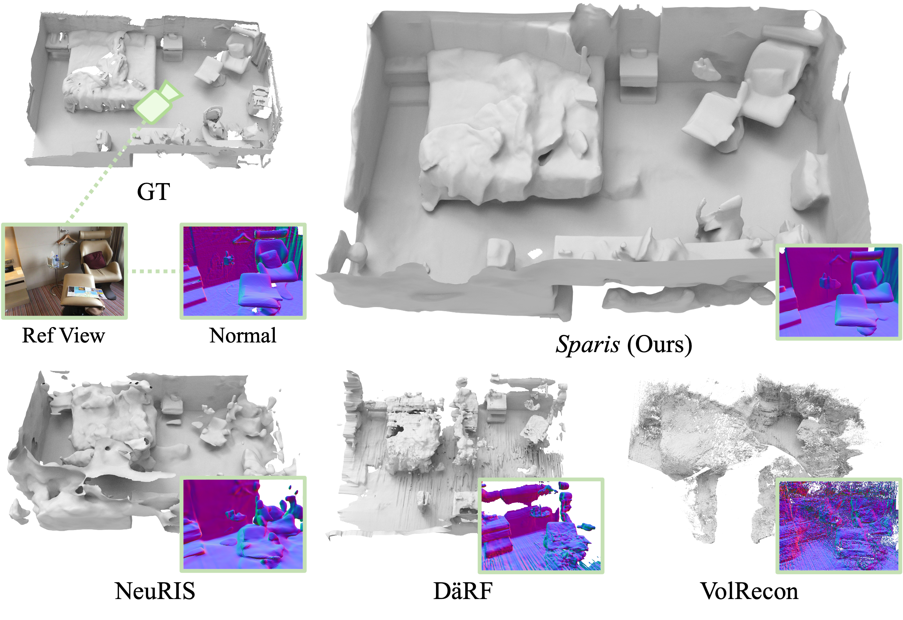
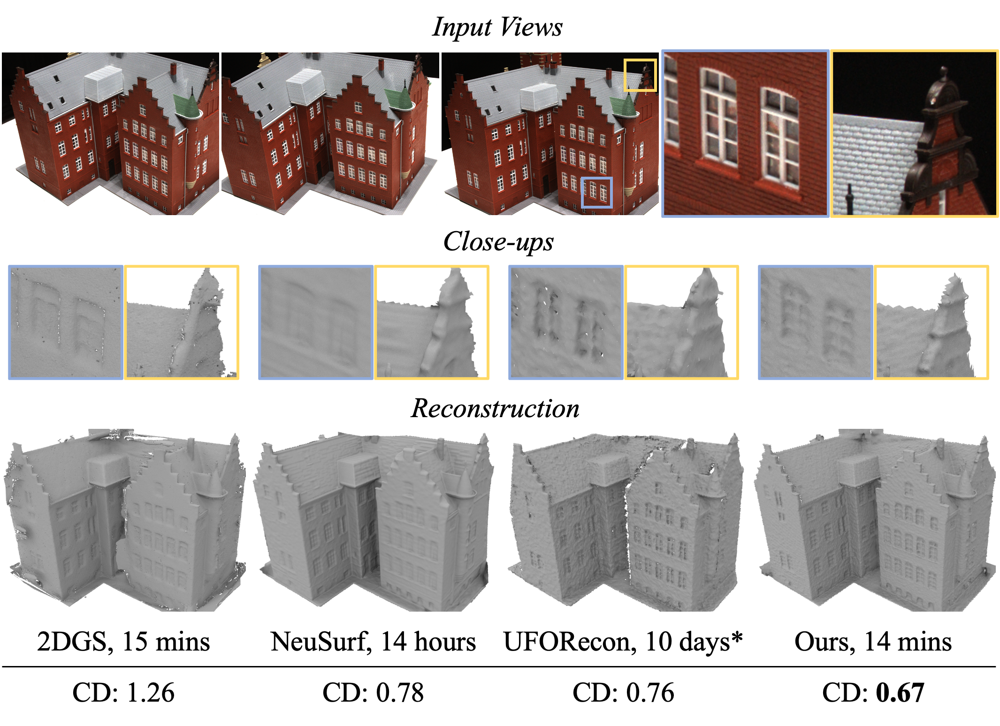

Yulun Wu （吴宇伦）
I am a Ph.D. student at the University of Illinois Urbana-Champaign, advised by Prof. Yaoyao Liu. My research interests mainly revolve around the area of 3D computer vision and graphics, with a particular focus on 3D reconstruction and generative models. I am also interested in scene understanding, perception and processing with multimodal intelligence.
News
- [Feb. 2025] 🎉 FatesGS
and Sparis are selected as oral presentations (~top 4.6% of all submitted papers) at AAAI 2025!
- [Dec. 2024] FatesGS and Sparis on multi-view reconstruction
are accepted to AAAI 2025. See
you in Philadelphia!
Selected Publications (*equal contribution)
-
Sparis: Neural Implicit Surface Reconstruction of Indoor Scenes from Sparse Views
AAAI Conference on Artificial Intelligence (AAAI), 2025
Project Page arXiv Code Video/Slides Oral Presentation

-
FatesGS: Fast and Accurate Sparse-View Surface Reconstruction Using Gaussian Splatting with Depth-Feature Consistency
AAAI Conference on Artificial Intelligence (AAAI), 2025
Project Page arXiv Code Video/Slides Oral Presentation

-
NeuSurf: On-Surface Priors for Neural Surface Reconstruction from Sparse Input Views
AAAI Conference on Artificial Intelligence (AAAI), 2024

Experience
-
University of Illinois Urbana-Champaign
Ph.D. in Information Sciences Champaign, IL, USAAug. 2025 - Present Advisor: Prof. Yaoyao Liu -

Tsinghua University
M.Eng. in Software Engineering Beijing, ChinaSept. 2022 - Jun. 2025
-
Tsinghua University
B.Eng. in Automation (Robotics) Beijing, ChinaAug. 2018 - Jun. 2022
-

SenseTime
Intern Beijing, ChinaJun. 2021 - Apr. 2022
Service
Conference Reviewer: ECCV (2026), CVPR (2026), ICASSP (2026), ICME (2025-2026).
Journal Reviewer: IJCV.
Copyright © 2025 Yulun Wu. Last updated: Mar. 2026.